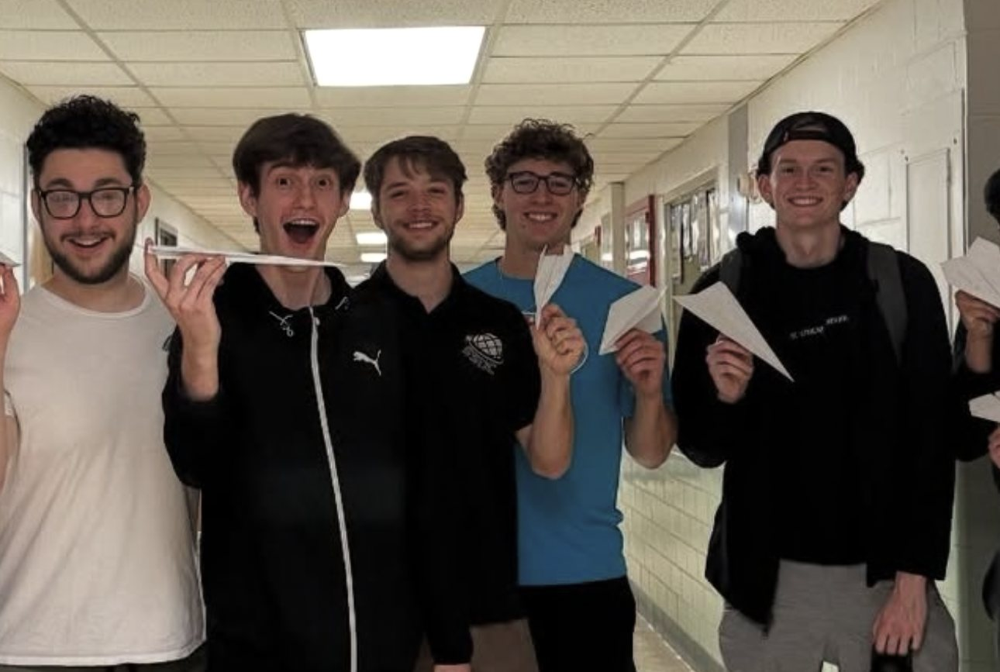

B.S. Computer Science, May 2027
Resume
407.488.0227 · michael.mccamy@ufl.edu · github.com/michaelmccamy
01
Education
University of Florida
May 2027
B.S. Computer Science · GPA 3.91 / 4.00 · Gainesville, Florida
Relevant coursework: Data Structures and Algorithms, Introduction to Software Engineering, Information and Database Systems, Introduction to Computer Organization, Operating Systems.
Honors: UF Dean's List (6x, August 2023 to present); AI Fundamentals and Applications Undergraduate Certification (in progress). Study abroad: UF in Singapore, Summer 2026.
02
Experience
Software Engineer Intern
June 2026 to August 2026
Fuzzy AI · Singapore
- Built and shipped 100+ bug fixes and features in a production TypeScript/React codebase, tracked in Linear.
- Onboarded and interviewed 15+ users and analyzed PostHog usage data to surface and fix workflow pain points.
- Translated user feedback into prioritized engineering work, owning changes from proposal through deployment.
CanSat Flight Software Developer
August 2024 to May 2026
UF Space Systems and Design Club · Gainesville, Florida
- Collaborated with a 4-person team to plan and develop flight software for a miniature satellite.
- Designed a graphical interface to track real-time telemetry data during launch and descent.
- Presented the flight software portion of Preliminary and Critical Design Reviews to the CanSat Competition Board.
03
Projects
MediLens
Python, Anthropic API (Claude), Streamlit
- Built a pre-claim denial-prevention tool that validates clinical notes against ICD-10-CM codes and payer policies, returning grounded code recommendations, documentation gaps, and a denial-risk score.
- Engineered a code-level verification layer that mechanically re-checks every LLM claim (cited note spans, candidate codes, policy clauses) so no ungrounded recommendation can reach output.
- Implemented PHI screening, effective-dated knowledge retrieval, and an append-only audit store, making every recommendation fully reconstructable.
- Wrote 163 automated tests, including regression tests that fail on upcoding or fabricated citations.
Task Manager REST API
Java, Spring Boot, PostgreSQL, React
- Built a full-stack task management app with a Spring Boot REST API, PostgreSQL database, and React frontend supporting real-time task creation and updates.
- Designed the relational schema and validated all CRUD endpoints with Postman test suites.
04
Skills, Tools and Involvement
- Languages
- Python, TypeScript, JavaScript, Java, C/C++, SQL, R, MATLAB, HTML/CSS
- Frameworks & tools
- React, Spring Boot, Streamlit, Firebase, PostgreSQL, Git/GitHub, GitHub Copilot, Claude Code, Claude API, Linear, PostHog, Postman, Unity
- Practices
- Agile/Scrum, REST API design, LLM application development
- Volunteering
- MentorGNV, Stephen Foster Elementary School: weekly one-on-one math and science tutoring, January to April 2025
